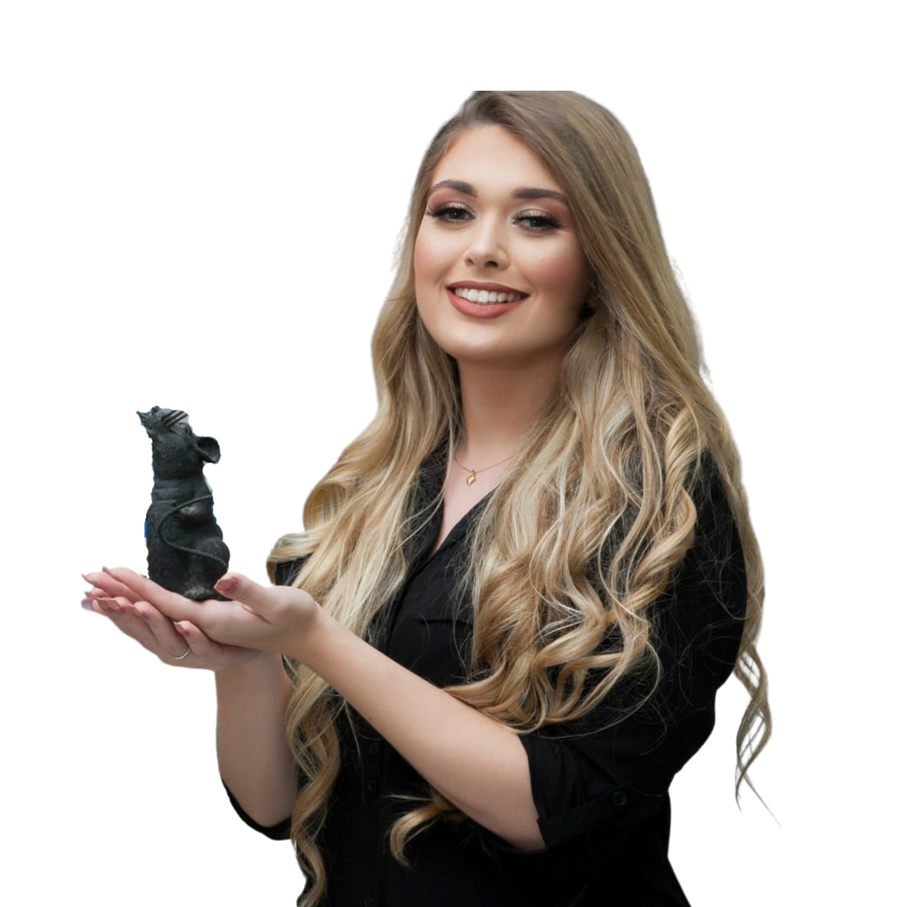

Sou brasileira, faço doutorado em neurociência na França e uso o dia a dia real do laboratório para mostrar que dá pra fazer PhD fora — mesmo começando sem saber por onde ir. Aqui eu organizo tudo o que gostaria de ter sabido antes.

Vim de fora da academia tradicional europeia — sem rede de contatos, sem saber como funcionava candidatura, orientador ou bolsa. Fui aprendendo cada etapa na prática, muitas vezes do jeito mais difícil.
Hoje faço doutorado em neurociência na França e compartilho essa rotina no Instagram. Quero transformar o que aprendi em um caminho mais curto para outros brasileiros que sonham em pesquisar fora — em qualquer área, não só na minha.
O básico para entender o caminho é e sempre vai ser gratuito. Está organizado em quatro frentes — no Instagram e, em breve, em guias completos aqui no site.
Como funcionam bolsas de doutorado fora, o que procurar e erros comuns na candidatura.
Como pesquisar laboratórios, escrever o primeiro e-mail e interpretar uma resposta (ou o silêncio).
Estrutura, tom e o que faz uma carta se destacar sem soar genérica.
Adaptação, idioma, saudade e como é a rotina real de quem pesquisa longe de casa.
Revisão de carta de motivação, direcionamento de país e orientador, e apoio durante o processo seletivo — pensado para a sua área e o seu momento, não uma fórmula genérica.